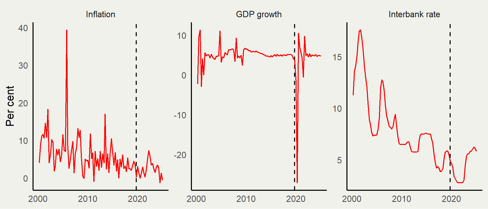
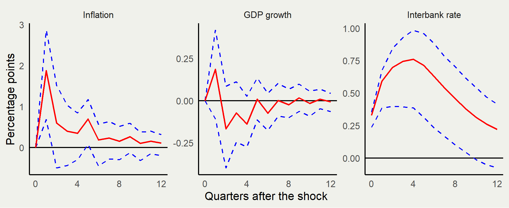
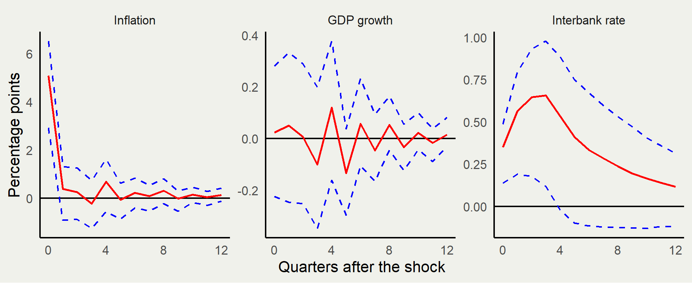
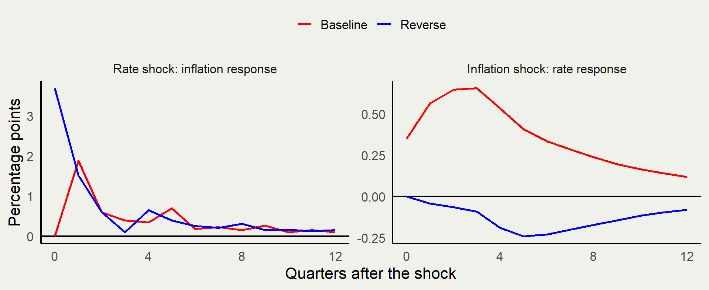
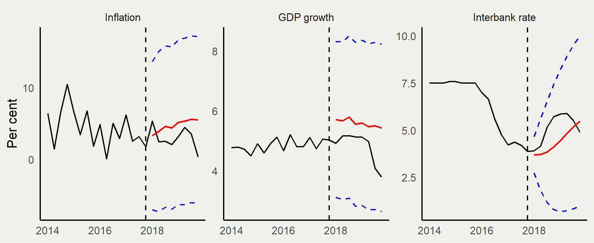

![]()
| Series | ADF statistic | 5% critical value | Verdict |
|---|---|---|---|
| Inflation | -2.93 | -2.89 | Reject unit root |
| Growth | -3.74 | -2.89 | Reject unit root |
| Rate | -2.86 | -2.89 | Borderline |
Vector Autoregressions
Stock and Watson (2001), replicated with Indonesian data
November 2026
Outline
- The paper and its history
- The VAR model
- Indonesian data
- Estimation, step by step
- Granger causality, impulse responses, variance decomposition
- Forecasting, critiques and exercises
The paper
The reference paper
Stock and Watson (2001)
“Vector Autoregressions”, Journal of Economic Perspectives 15(4), 101–115.
A non-technical review written for general economists.
- Three US variables: inflation, unemployment, federal funds rate.
- Quarterly, 1960–2000, four lags.
- Textbook companion: Enders (2015), chapter 5.
Today we redo their exercise with Indonesian data, in Stata and R.
Before 1980: two camps
Structural models
- Hundreds of simultaneous equations.
- Variables labelled exogenous by assumption.
- Zero restrictions give identification.
Univariate time series
- Box and Jenkins (1970): ARIMA.
- Good short-run forecasts.
- Silent on how variables interact.
Sims’s critique (1980)
- Large models rest on “incredible identification restrictions”.
- In macroeconomics, almost everything is endogenous.
- Proposal: treat every variable symmetrically.
- Let the data, not the modeller, choose the dynamics.
A VAR regresses each variable on lags of itself and of all the others.
A short history
| Year | Who | Contribution |
|---|---|---|
| 1969 | Granger | A testable definition of “causality” based on forecasting |
| 1980 | Sims | “Macroeconomics and Reality”: the VAR |
| 1986 | Bernanke; Sims | Structural VARs: identification from economic theory |
| 1992 | Sims | The “price puzzle” in monetary VARs |
| 2001 | Stock and Watson | What VARs do well, and what they do not |
| 2003, 2011 | Nobel Prizes | Granger (2003); Sims, with Sargent (2011) |
What a VAR is used for
Stock and Watson (2001) list four tasks:
- Describe data: Granger causality, impulse responses, variance decompositions.
- Forecast several variables jointly.
- Structural inference: the effect of a policy shock.
- Policy analysis: the effect of changing a policy rule.
VARs are reliable for tasks 1 and 2. Tasks 3 and 4 need assumptions the data cannot test.
The VAR model
Start with two variables
\[ \begin{aligned} y_t &= b_{10} - b_{12} z_t + \gamma_{11} y_{t-1} + \gamma_{12} z_{t-1} + \varepsilon_{yt} \\ z_t &= b_{20} - b_{21} y_t + \gamma_{21} y_{t-1} + \gamma_{22} z_{t-1} + \varepsilon_{zt} \end{aligned} \]
where \(y_t\) and \(z_t\) are two stationary variables (say, inflation and the interest rate), \(b_{12}\) and \(b_{21}\) are contemporaneous effects, \(\gamma_{ij}\) is the effect of lagged variable \(j\) on variable \(i\), \(b_{10}\) and \(b_{20}\) are intercepts, and \(\varepsilon_{yt}\), \(\varepsilon_{zt}\) are uncorrelated white-noise structural shocks.
Why OLS fails here
- \(z_t\) depends on \(y_t\), and \(y_t\) depends on \(z_t\).
- So \(z_t\) is correlated with \(\varepsilon_{yt}\): simultaneity bias.
- This system is the structural (primitive) VAR.
- We need a form with only lagged variables on the right.
The VAR in standard form
\[ \begin{aligned} y_t &= a_{10} + a_{11} y_{t-1} + a_{12} z_{t-1} + e_{1t} \\ z_t &= a_{20} + a_{21} y_{t-1} + a_{22} z_{t-1} + e_{2t} \end{aligned} \]
where \(a_{i0}\) are intercepts, \(a_{ij}\) is the effect of lagged variable \(j\) on variable \(i\), and \(e_{1t}\), \(e_{2t}\) are the regression errors. All \(a\) coefficients are combinations of the structural \(b\) and \(\gamma\).
Errors are mixtures of shocks
\[ e_{1t} = \frac{\varepsilon_{yt} - b_{12}\,\varepsilon_{zt}}{1 - b_{12} b_{21}} \qquad e_{2t} = \frac{\varepsilon_{zt} - b_{21}\,\varepsilon_{yt}}{1 - b_{12} b_{21}} \]
where \(e_{1t}\), \(e_{2t}\) are the standard-form errors, \(\varepsilon_{yt}\), \(\varepsilon_{zt}\) the structural shocks, and \(b_{12}\), \(b_{21}\) the contemporaneous effects. Unless \(b_{12} = b_{21} = 0\), the two errors are correlated with each other.
What this buys us
- Right-hand side holds only lags: OLS is consistent.
- Same regressors in every equation: OLS equation by equation is efficient.
- Price: \(e_{1t}\) and \(e_{2t}\) are forecast errors, not economic shocks.
- That price is paid later, at the impulse responses.
The general VAR(p)
\[ x_t = A_0 + A_1 x_{t-1} + A_2 x_{t-2} + \dots + A_p x_{t-p} + e_t \]
where \(x_t\) is an \(n \times 1\) vector of variables, \(A_0\) an \(n \times 1\) vector of intercepts, \(A_i\) are \(n \times n\) coefficient matrices, \(p\) is the lag length, and \(e_t\) an \(n \times 1\) vector of errors with covariance matrix \(\Sigma\).
Stability
- AR(1): stable if \(|a_1| < 1\).
- VAR: stable if all eigenvalues of the companion matrix lie inside the unit circle.
- Stable means stationary: shocks die out.
- Then a VAR can be rewritten as a moving average of past shocks.
The cost: many parameters
- A VAR estimates \(n + p\,n^2\) coefficients.
- Three variables, four lags: \(3 + 4 \times 9 = 39\).
- Our sample: 75 quarters per equation.
- Most coefficients are insignificant. That is expected.
Do not read individual VAR coefficients. Read tests, impulse responses and decompositions.
Indonesian data
From the US to Indonesia
| Stock and Watson (2001) | This lecture | |
|---|---|---|
| Prices | GDP deflator inflation | CPI inflation |
| Activity | Unemployment rate | Real GDP growth |
| Policy | Federal funds rate | Overnight interbank rate |
| Sample | 1960Q1–2000Q4 | 2000Q2–2019Q4 |
| Lags | 4 | 4 |
Source: FRED (IMF IFS and OECD MEI series), via data/get_data.py.
Why these choices
- Indonesian unemployment is semi-annual, so we use GDP growth.
- The interbank rate is the Indonesian analogue of the federal funds rate.
- Inflation and growth: \(400 \times \Delta \ln\), annualised per cent.
- The sample stops in 2019Q4. COVID-19 comes back later.
Load the data
Stata
The three series
Quarterly CPI inflation and real GDP growth (annualised, per cent) and the overnight interbank rate (per cent per year) on the y-axes, by quarter on the x-axis, 2000Q2–2025Q1. The dashed line marks 2019Q4, the end of the estimation sample. Source: FRED (IMF IFS, OECD MEI).

Reading the series
- Inflation spikes with fuel-price increases: 2005Q4, 2008, 2013Q3.
- The interbank rate jumps in the same quarters.
- Growth is remarkably flat around 5 per cent until 2020.
- 2020Q2: growth of -27 per cent annualised, an outlier of another order.
Are the series stationary?
Augmented Dickey–Fuller test with a constant and four lags. \(H_0\): unit root.
Difference or not?
- Sims (1980): do not difference. It throws away co-movement.
- Majority view: the variables should mimic the true process.
- All I(1) and cointegrated: use a VECM, the Engle–Granger session.
- Here the interest rate is borderline. We proceed in levels and say so.
Estimation
Step 1: choose the lag length
\[ AIC = T \ln|\Sigma| + 2N \qquad SBC = T \ln|\Sigma| + N \ln T \]
where \(T\) is the number of usable observations, \(|\Sigma|\) the determinant of the residual covariance matrix, and \(N\) the total number of estimated coefficients in all equations. Choose the lag length with the lowest value, comparing models over the same sample.
Lag length: code and result
Step 2: estimate
Step 3: check the model
Granger causality
The definition
\[ y_t = a_{10} + \sum_{i=1}^{p} a_{11}(i)\, y_{t-i} + \sum_{i=1}^{p} a_{12}(i)\, z_{t-i} + e_{1t} \]
where \(a_{11}(i)\) and \(a_{12}(i)\) are the coefficients on lag \(i\) of \(y\) and \(z\), and \(p\) is the lag length. \(z\) does not Granger-cause \(y\) if \(a_{12}(1) = \dots = a_{12}(p) = 0\), which is tested with a standard F-test when the variables are stationary.
What it does not mean
- It is a statement about forecasting: do lags of \(z\) help predict \(y\)?
- It is not causality in the everyday sense.
- It is not exogeneity: \(z_t\) may still move \(y_t\) within the quarter.
- With I(1) variables in levels, the F-test is no longer standard.
Granger tests: code
Granger tests: results
p-values of the F-test that all four lags of the row variable are zero in the column equation.
| Lags of | Inflation eq. | Growth eq. | Rate eq. |
|---|---|---|---|
| Inflation | 0.325 | 0.526 | 0.356 |
| Growth | 0.337 | 0.049 | 0.180 |
| Rate | 0.014 | 0.372 | 0.000 |
Reading the table
- The interest rate helps predict inflation (p = 0.014).
- Nothing helps predict growth beyond its own lags.
- Inflation and growth do not help predict the interest rate.
- Stock and Watson find more feedback in US data.
My work: night lights
| p-value by lag length | 1 | 2 | 3 | 4 |
|---|---|---|---|---|
| Night lights → GDP | 0.326 | 0.007 | 0.229 | 0.343 |
| GDP → night lights | 0.006 | 0.018 | 0.007 | 0.004 |
Source: Gupta, Ginting and Afidatie (2026), quarterly Indonesian data, 2012–2024.
Night lights track GDP more than they lead it. The answer can depend on the lag length.
Impulse responses
The question
- A shock hits the interest rate today.
- What happens to inflation and growth over the next three years?
- The VAR has the dynamics. It lacks the shock.
- We observe \(e_t\), the forecast errors, not \(\varepsilon_t\), the structural shocks.
Moving-average form
\[ x_t = \mu + \sum_{i=0}^{\infty} \phi_i \, \varepsilon_{t-i} \]
where \(x_t\) is the vector of variables, \(\mu\) their unconditional mean, \(\varepsilon_{t-i}\) the vector of structural shocks \(i\) periods ago, and \(\phi_i\) an \(n \times n\) matrix. Element \(\phi_{jk}(i)\) is the response of variable \(j\), after \(i\) periods, to a one-unit shock in variable \(k\). Plotted against \(i\), it is the impulse response function.
The identification problem
- Two-variable VAR: OLS gives 9 numbers, 6 coefficients and 3 elements of \(\Sigma\).
- The structural model has 10 parameters.
- One restriction is missing. In general, \((n^2 - n)/2\) are.
- With three variables we must impose three restrictions.
Cholesky: pick an ordering
\[ \begin{aligned} e_{\pi t} &= \varepsilon_{\pi t} \\ e_{g t} &= c_{21}\,\varepsilon_{\pi t} + \varepsilon_{g t} \\ e_{R t} &= c_{31}\,\varepsilon_{\pi t} + c_{32}\,\varepsilon_{g t} + \varepsilon_{R t} \end{aligned} \]
where \(e_{\pi t}\), \(e_{g t}\), \(e_{R t}\) are the VAR errors of inflation, growth and the interest rate, \(\varepsilon\) the corresponding structural shocks, and \(c_{ij}\) the contemporaneous effect of shock \(j\) on variable \(i\). The three zeros above the diagonal are the three restrictions.
What the ordering assumes
Ordering: inflation, growth, interest rate. As in Stock and Watson.
- Inflation reacts to nothing else within the quarter.
- Growth reacts to inflation within the quarter.
- The interest rate reacts to both within the quarter.
- A rate shock moves inflation and growth only from next quarter.
Impulse responses: code
Stata
The ordering is the order of the variables in var and in the columns of y. Stata reports asymptotic confidence bands, R bootstrapped ones.
An interest-rate shock
Responses (y-axis, percentage points) of inflation, GDP growth and the interbank rate to a one-standard-deviation interest-rate shock (0.33 percentage points), by quarters after the shock (x-axis). Red: point estimate. Dashed blue: 95 per cent bootstrap band, 1,000 draws. Cholesky ordering: inflation, growth, rate. Source: author’s estimates from FRED data.

A puzzle
- A surprise rate increase is followed by higher inflation: +1.9 points after one quarter.
- Growth barely responds.
- This is the “price puzzle” of Sims (1992).
- Likely story: the central bank sees inflation coming and tightens first. The VAR lacks that information.
The shock we identified is not a clean monetary policy shock.
An inflation shock
Responses (y-axis, percentage points) of inflation, GDP growth and the interbank rate to a one-standard-deviation inflation shock (5.1 percentage points, annualised), by quarters after the shock (x-axis). Red: point estimate. Dashed blue: 95 per cent bootstrap band, 1,000 draws. Cholesky ordering: inflation, growth, rate. Source: author’s estimates from FRED data.

Reading the inflation shock
- Inflation shocks are short-lived: gone after one quarter.
- The interest rate rises on impact by 0.35 points and stays up for about a year.
- That looks like a policy rule: tighten when prices jump.
- Growth again barely moves.
Does the ordering matter?
- It matters when the VAR errors are correlated.
- Rule of thumb: \(|\rho| > 2/\sqrt{T}\), here 0.23.
- Inflation and interest-rate errors: \(\rho\) = 0.73.
- So we must try the reverse ordering: rate, growth, inflation.
Two orderings compared
Responses (y-axis, percentage points) by quarters after the shock (x-axis) under two Cholesky orderings. Red: inflation, growth, rate (baseline). Blue: rate, growth, inflation (reverse). Left: inflation after an interest-rate shock. Right: interest rate after an inflation shock. Source: author’s estimates from FRED data.

What the comparison says
- Reverse ordering: a rate shock raises inflation by 3.7 points on impact.
- And an inflation shock no longer moves the rate on impact.
- Same data, same VAR, different story.
- The data cannot choose. Only economic reasoning can.
Variance decomposition
The idea
\[ \text{share}_{y \leftarrow z}(h) = \frac{\sigma_z^2 \sum_{i=0}^{h-1} \phi_{12}(i)^2}{\sigma_y(h)^2} \]
where \(\sigma_y(h)^2\) is the variance of the \(h\)-step-ahead forecast error of \(y\), \(\sigma_z^2\) the variance of the structural shock to \(z\), and \(\phi_{12}(i)\) the response of \(y\) to that shock after \(i\) periods. The shares across all shocks sum to one. They depend on the ordering, like the impulse responses.
Decomposition: code
Decomposition: results
Per cent of forecast error variance (rows) due to each shock (columns), at horizons \(h\) of 1 and 12 quarters.
| Variable | h | Inflation | Growth | Rate |
|---|---|---|---|---|
| Inflation | 1 | 100 | 0 | 0 |
| Inflation | 12 | 81 | 4 | 15 |
| Growth | 1 | 0 | 100 | 0 |
| Growth | 12 | 3 | 92 | 5 |
| Rate | 1 | 53 | 1 | 46 |
| Rate | 12 | 34 | 4 | 62 |
Reading the decomposition
- Growth is close to exogenous: 92 per cent own shocks after three years.
- Inflation is mostly its own shocks too.
- The interest rate is the endogenous variable: about 34 per cent due to inflation shocks.
- Consistent with a central bank that reacts to prices.
Forecasting
How a VAR forecasts
\[ \begin{aligned} E_T\, x_{T+1} &= A_0 + A_1 x_T \\ E_T\, x_{T+2} &= A_0 + A_1 E_T\, x_{T+1} \end{aligned} \]
where \(E_T\, x_{T+h}\) is the forecast of the vector \(x\) made at time \(T\) for \(h\) periods ahead, and \(A_0\), \(A_1\) are the estimated intercepts and coefficients (shown for one lag). Each forecast feeds the next one. No identification is needed: forecasting uses the standard form only.
Forecasting: code
Forecast of 2018–2019
Actual values (black) and VAR(4) forecasts (red) with a 95 per cent interval (dashed blue), in per cent (y-axis), by quarter (x-axis). The VAR is estimated on data to 2017Q4 (dashed vertical line) and forecasts the next eight quarters. Source: author’s estimates from FRED data.

Does it beat simple models?
Root mean squared error of recursive forecasts for 2012–2019, \(h\) quarters ahead.
| Variable | h | Random walk | AR(4) | VAR(4) |
|---|---|---|---|---|
| Inflation | 1 | 4.76 | 3.60 | 3.59 |
| Inflation | 4 | 3.74 | 3.80 | 3.46 |
| Growth | 1 | 0.29 | 0.45 | 0.77 |
| Growth | 4 | 0.50 | 0.53 | 0.74 |
| Rate | 1 | 0.44 | 0.35 | 0.39 |
| Rate | 4 | 1.32 | 1.33 | 1.37 |
Reading the forecasts
- The VAR does not clearly beat the univariate models.
- For growth, “no change” wins: Indonesian growth barely moves.
- 39 coefficients on about 50 to 75 observations is a heavy load.
- Stock and Watson also report mixed results for the United States.
Critiques
Limits and what came next
| Problem | Development |
|---|---|
| Cholesky ordering is arbitrary | Structural VAR: restrictions from theory (Bernanke 1986; Blanchard and Quah 1989) |
| Too many parameters | Bayesian VAR with shrinkage priors (Litterman 1986) |
| I(1), cointegrated variables | Vector error correction model (Engle and Granger 1987; Johansen 1988) |
| Price puzzle, omitted information | Add commodity prices or expectations (Sims 1992) |
| Dynamics forced by the VAR lags | Local projections (Jordà 2005) |
| Structural breaks and outliers | Dummies, subsamples, time-varying parameters |
COVID-19 as an outlier
Residual standard deviation of each equation, VAR(4), percentage points.
| Sample | Inflation | Growth | Rate |
|---|---|---|---|
| 2000Q2–2019Q4 | 5.08 | 1.26 | 0.48 |
| 2000Q2–2025Q1 | 4.79 | 3.90 | 0.46 |
- One quarter, 2020Q2, triples the noise in the growth equation.
Always plot the data and the residuals before trusting a VAR.
Stata and R: same model?
- Residual covariance: Stata divides by \(T\), R by \(T - np - 1\). Use
dfk. - Tests: Stata reports \(\chi^2\), R reports F. Use
small. - Confidence bands: asymptotic in Stata, bootstrap in R.
- Ordering: variable order in Stata’s
var, column order in R.
Exercises
The workflow
- Choose variables from theory; plot them.
- Test for unit roots; decide levels, differences or VECM.
- Choose the lag length; estimate; check stability and residuals.
- Granger causality tests.
- Impulse responses and variance decompositions, with at least two orderings.
- Forecast, and compare with a simple benchmark.
Your turn
- Run
var_idn.doorvar_idn.Rand reproduce every table. - Add the rupiah depreciation rate,
400*diff(log(fx)). Where does it go in the ordering? - How much of a depreciation shock passes through to inflation?
- Re-estimate on 2000Q2–2025Q1. What changes, and why?
References
Bernanke, B. S. (1986). Alternative explanations of the money–income correlation. Carnegie-Rochester Conference Series on Public Policy, 25, 49–99.
Blanchard, O. J., & Quah, D. (1989). The dynamic effects of aggregate demand and supply disturbances. American Economic Review, 79(4), 655–673.
Enders, W. (2015). Applied Econometric Time Series (4th ed.). Wiley. Chapter 5.
Engle, R. F., & Granger, C. W. J. (1987). Co-integration and error correction: Representation, estimation, and testing. Econometrica, 55(2), 251–276.
Granger, C. W. J. (1969). Investigating causal relations by econometric models and cross-spectral methods. Econometrica, 37(3), 424–438.
Gupta, K., Ginting, T., & Afidatie, M. (2026). Forecasting Indonesian national and provincial GDP using nighttime light index. DEN Working Paper No. 3.
Johansen, S. (1988). Statistical analysis of cointegration vectors. Journal of Economic Dynamics and Control, 12(2–3), 231–254.
Jordà, Ò. (2005). Estimation and inference of impulse responses by local projections. American Economic Review, 95(1), 161–182.
Litterman, R. B. (1986). Forecasting with Bayesian vector autoregressions: Five years of experience. Journal of Business & Economic Statistics, 4(1), 25–38.
Lucas, R. E. (1976). Econometric policy evaluation: A critique. Carnegie-Rochester Conference Series on Public Policy, 1, 19–46.
Pfaff, B. (2008). VAR, SVAR and SVEC models: Implementation within R package vars. Journal of Statistical Software, 27(4).
Sims, C. A. (1980). Macroeconomics and reality. Econometrica, 48(1), 1–48.
Sims, C. A. (1992). Interpreting the macroeconomic time series facts: The effects of monetary policy. European Economic Review, 36(5), 975–1000.
Sims, C. A., Stock, J. H., & Watson, M. W. (1990). Inference in linear time series models with some unit roots. Econometrica, 58(1), 113–144.
Stock, J. H., & Watson, M. W. (2001). Vector autoregressions. Journal of Economic Perspectives, 15(4), 101–115.